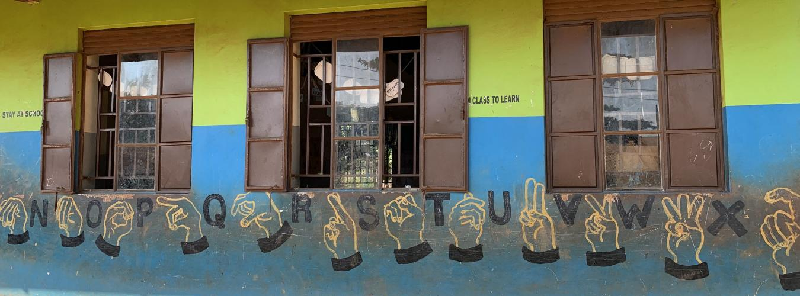
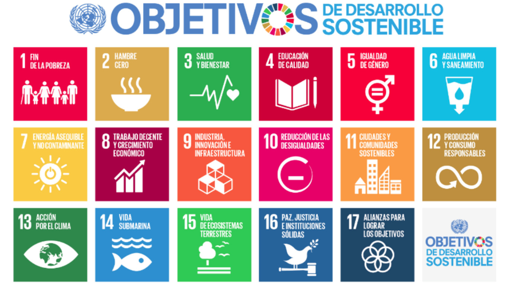
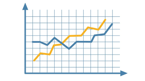
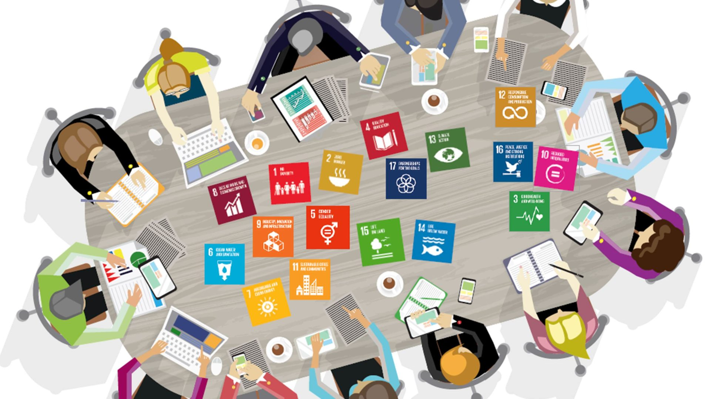
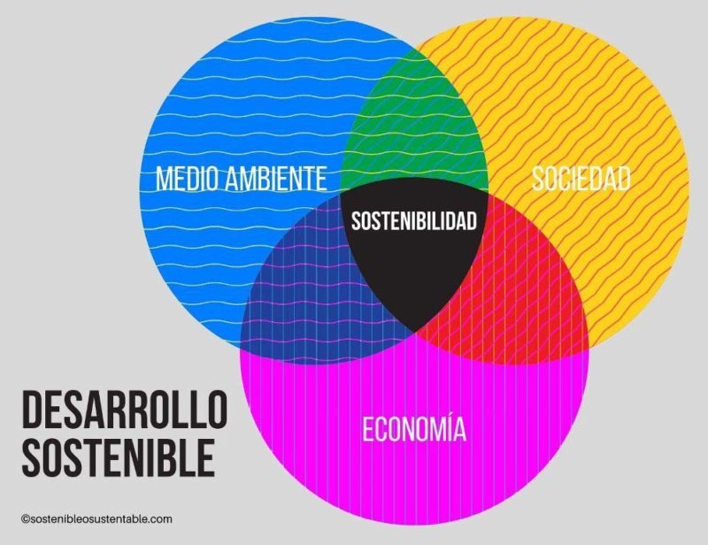

Últimas Noticias

Día Internacional de las Personas con Discapacidad
La ONU celebra el Día Internacional de las Personas con Discapacidad para promover los derechos y el bienestar de las personas con discapacidades.

Situación de los ODS de la Agenda 2030
Un informe reciente analiza el progreso y los desafíos en la implementación de los ODS de la Agenda 2030.

Monitoreo de Indicadores ODS 3
El personal de salud fortalece sus capacidades para un monitoreo eficiente de los indicadores del ODS 3.

Empresas Españolas y los ODS
Las empresas españolas refuerzan su compromiso con los Objetivos de Desarrollo Sostenible.

ODS 3 y Responsabilidad Corporativa
Directores de comunicación y responsabilidad corporativa discuten sobre el impacto del ODS 3 en sus empresas.